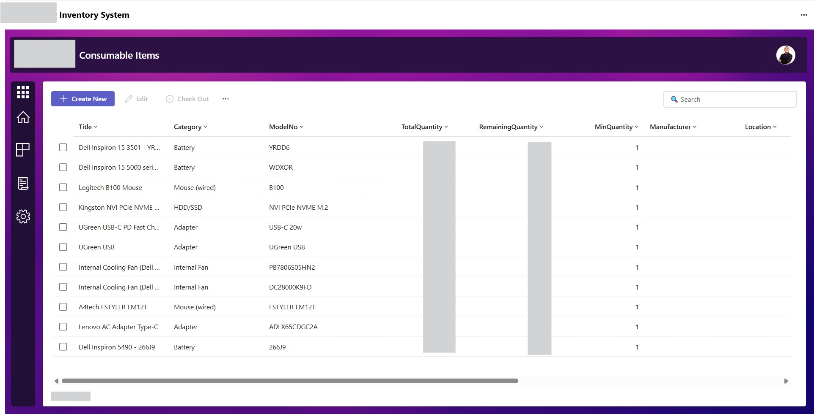
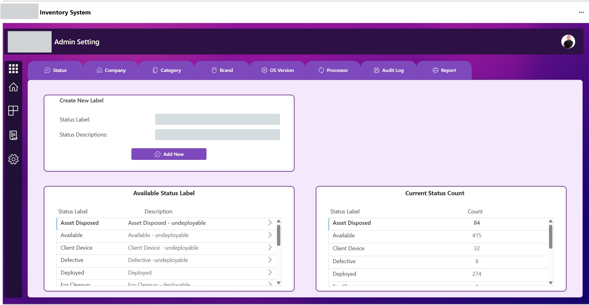

Dashboard Module
Centralized IT Asset Overview & KPI Monitoring — Provides real-time visibility into asset quantities, availability, deployment status, and key inventory metrics.

Tools: Power Apps | Power Automate | SharePoint
I designed and developed a centralized Inventory Management System to fully replace the company’s manual and spreadsheet-based tracking process. The solution was built using Microsoft Power Apps for the user interface, SharePoint as the data source, and Power Automate for workflow automation.
The system enables end-to-end tracking of IT assets, including item registration, stock levels, device assignment, and return processes. It provides real-time visibility of inventory status, allowing users to easily monitor available, deployed, and defective items.
Key features include automated notifications for check-in and checkouts and an audit logs
Centralized IT Asset Overview & KPI Monitoring — Provides real-time visibility into asset quantities, availability, deployment status, and key inventory metrics.
The Asset Inventory module manages the full lifecycle of IT devices, including check-in, check-out, and asset updates. It maintains a detailed history of device movements and transactions, providing full visibility and traceability. A dedicated Maintenance tab is also included to track repairs, servicing, and device status. one centralized view.

Asset Information, Assignment & Status Management — Provides detailed asset records including asset ID, model, serial number, assigned user, status, and other equipment information.This customizable and depends on the requirements

Asset Transactions, Movement & Audit Trail — Tracks asset assignments, returns, status changes, transfers, and other inventory transactions for accountability and auditing.

Equipment Repair, Maintenance & Lifecycle Management — Tracks defective assets, repairs, maintenance activities, service status, and equipment lifecycle.

Asset Return & Check-in Management — Manages returned equipment, records asset condition and return details, and automatically updates inventory availability.

Asset Deployment & Check-out Management — Streamlines the assignment and release of IT equipment to employees while recording accountability, deployment details, and asset status.

Check-in & Check-out Email Automation — Automatically sends email notifications whenever an asset is checked in or checked out, providing employees and IT personnel with immediate transaction updates.

Real-Time Inventory Activity Notifications — Automatically posts updates to an IT group chat whenever inventory records are added, modified, assigned, returned, or otherwise changed, improving team visibility and communication.

The Consumables Asset module tracks inventory levels of consumable items by monitoring usage and remaining balances in real time. It ensures accurate stock visibility and helps prevent shortages through efficient tracking and management.

The Admin Settings module centralizes system configuration, allowing administrators to manage and maintain key data such as status, company, brand, and other reference values. It also includes audit logs and reporting features to track system changes and user activities, ensuring transparency and accountability.
